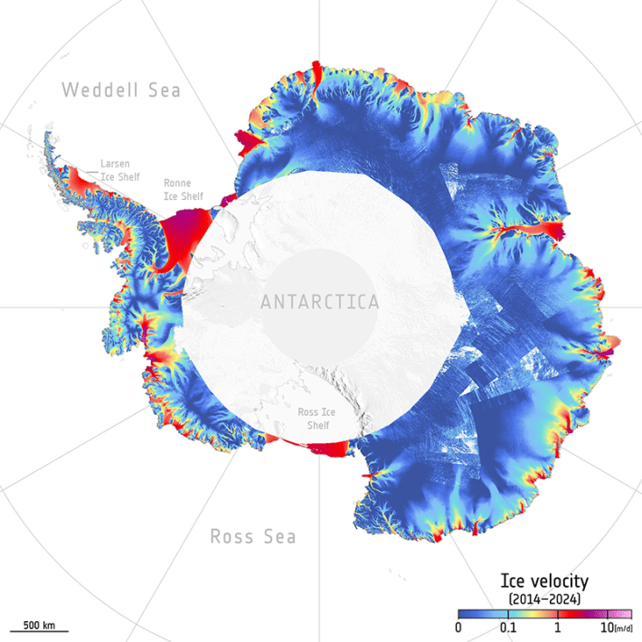

You’re looking at one of the quickest moving glaciers in the world—the bright hues added to this satellite image of Jakobshavn Glacier in Greenland represent the average speed of ice movement between 2014 and 2024. Ice was observed to travel up to about 160 feet per day, or around the width of a football field, according to the European Space Agency (ESA), whose Copernicus Sentinel-1 satellites recorded these trends. There could be a few reasons why: For one, the floating edge that once met the seafloor may have melted enough to no longer serve as a “doorstop” to slow down the glacier’s movement.
These findings came from the first continuous, high-resolution survey of ice-flow speeds across the Antarctic and Greenland ice sheets. This information is vital in keeping tabs on the break-up of ice sheets and gauging how the world’s seas will rise in the coming decades. We already know that the Arctic is heating up quicker than the rest of the globe, and that Greenland and Antarctic ice sheets are melting six times faster than in the 1990s.

NOT-SO GLACIAL SPEED: This map tracks the average velocity of ice traveling across the Antarctic ice sheet between 2014 and 2024. Image by ESA (Data source: Wuite, J. et al. 2025).
Before this recent ESA mission, satellites had only taken snapshots of a few glaciers in Antarctica and Greenland or collected infrequent data. Some teams have examined glaciers over time with optical imagery from satellites, which captures what’s visible to the naked eye. But this limits monitoring to the daytime, and clouds or smoke can block the satellite’s view.
A technology called synthetic aperture radar (SAR) clears these hurdles by beaming out energy pulses and measuring the amount of energy reflected back from these glaciers. Between 2014 and 2024, an instrument on Copernicus Sentinel-1 satellites collected SAR data to trace the ice’s travels.
Read more: “The Hidden Landscape Holding Back the Sea”
The vibrant visualizations of the ice sheets in Greenland and Antarctica were created by a team from ENVEO IT, an engineering company based in Austria. They applied specialized algorithms to the SAR measurements, according to a Remote Sensing of Environment paper, generating maps that display average ice speeds over the decade-long satellite survey period.
“Before the launch of Sentinel-1, the absence of consistent SAR observations over polar glaciers and ice sheets posed a major barrier to long-term climate records,” explained study co-author Jan Wuite of ENVEO IT in a statement. “Today, the resulting velocity maps offer an extraordinary view of ice-sheet dynamics, providing a reliable and essential data record for understanding polar regions in a rapidly changing global climate.”
In the future, ESA will continue to keep an eye on the speed of these ice sheets from space thanks to the ROSE-L satellite mission that’s slated to launch in 2028. ROSE-L will harness a similar SAR instrument to track the flow of ice, offering a detailed look into what the warming future holds. 
Enjoying Nautilus? Subscribe to our free newsletter.
Lead image: ESA (Data source: Wuite, J. et al. 2025)